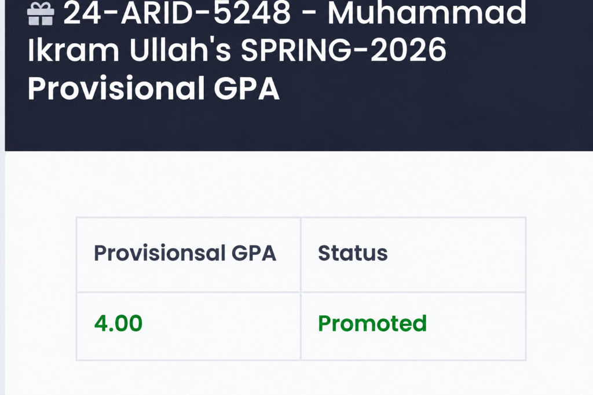
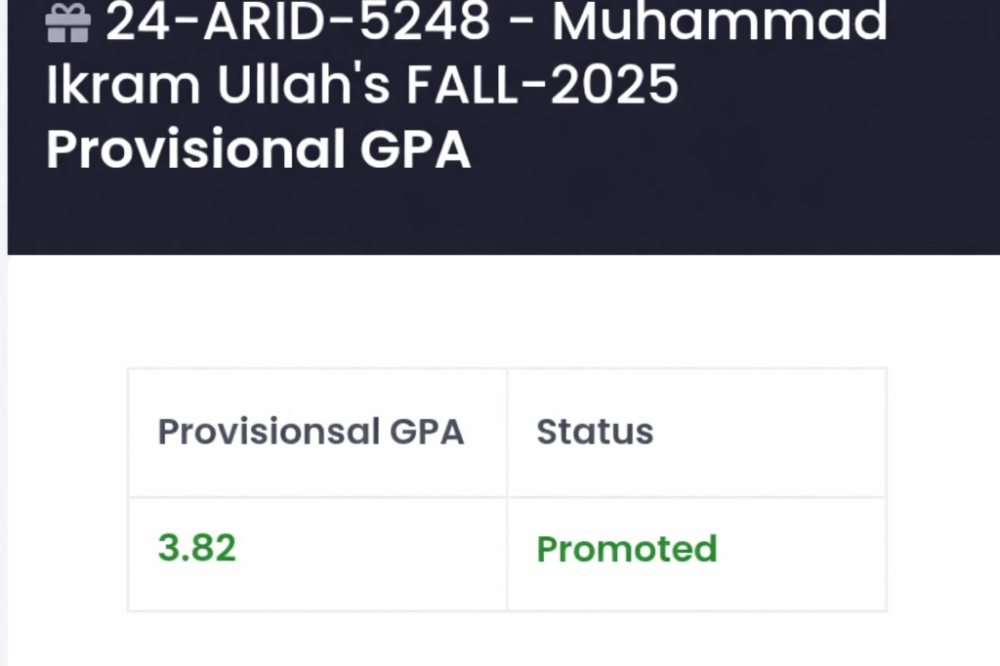
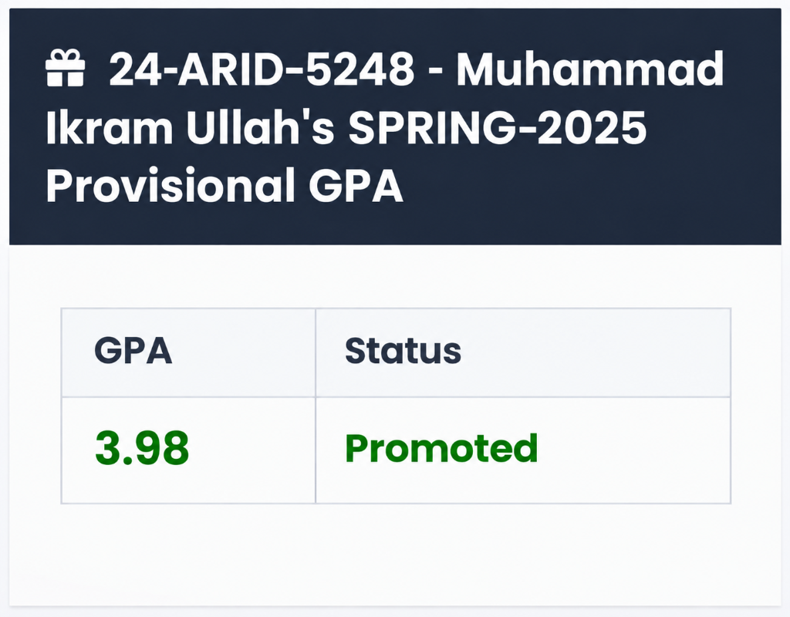
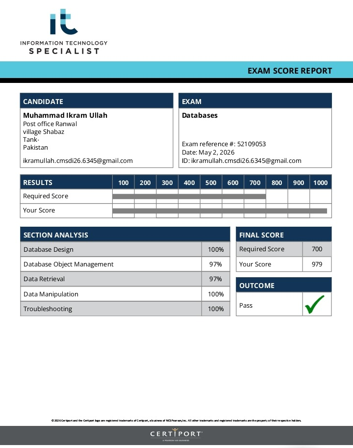
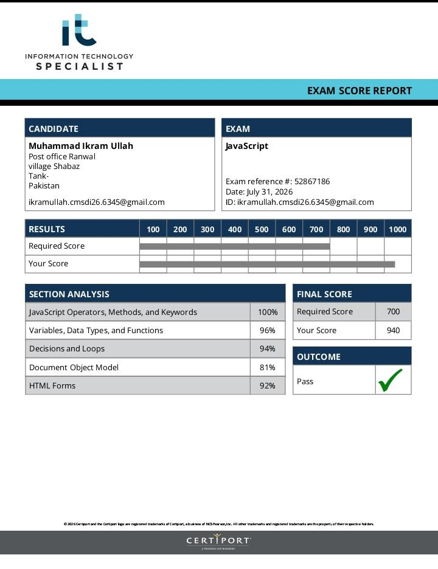

Academic & Certification Excellence
Comprehensive record of undergraduate education, official semester GPA transcripts, and international Pearson VUE / Certiport examination score reports.
BS Software Engineering
Barani Institute of Management Sciences (BIMS)
Affiliated with PMAS-Arid Agriculture University Rawalpindi
- Student ID / Roll No 24-ARID-5248
- Cumulative CGPA 3.81 / 4.00
- Semesters Completed 4 Semesters (1st – 4th)
- Highest Semester GPA 4.00 (Spring 2026)
- Academic Status Promoted & Migrated to IMCB (QAU)
BS Statistics
IMCB F-10/4, Islamabad
Affiliated with Quaid-i-Azam University (QAU), Islamabad
- Degree Awarding Body Quaid-i-Azam University (Ranked #1)
- Specialization Data Science
- Admission Date September 2026
- Current Stage 5th Semester (Active)
- Enrollment Status Semester In Progress
BIMS Provisional Semester Results
Official semester-by-semester provisional GPA results for candidate Muhammad Ikram Ullah (Roll No: 24-ARID-5248) at Barani Institute of Management Sciences.
4th Semester Result
SPRING-2026 • BIMS
3rd Semester Result
FALL-2025 • BIMS
2nd Semester Result
SPRING-2025 • BIMS
Certificate Exam Score Reports
Official exam score reports administered by Pearson VUE and Certiport, demonstrating mastery of Database Systems and JavaScript programming with section breakdown analytics.
ITS: Databases
Exam Date: May 2, 2026 • Ref #52109053

Section Analysis Breakdown
ITS: JavaScript
Exam Date: July 31, 2026 • Ref #52867186
